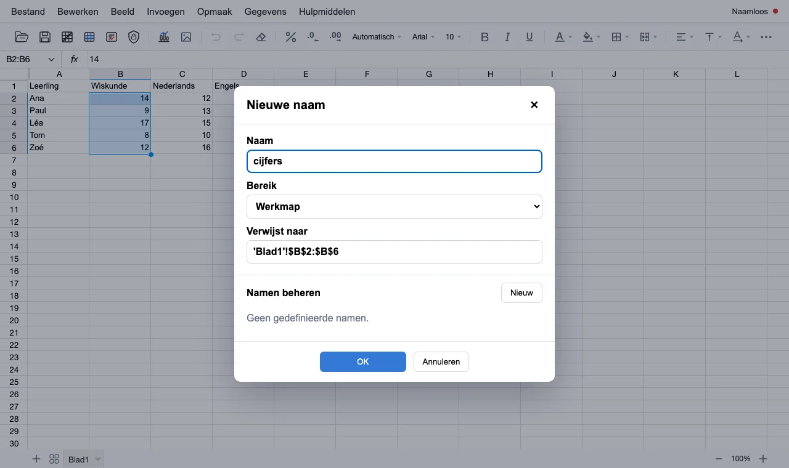

Benoemde bereiken
Een naam geven
- De cel of het bereik selecteren.
- Rechtsklikken › Naam definiëren… (of de pijl van het naamvak › Namen beheren).
- De naam typen, het bereik van de naam kiezen, OK.

| Veld | Inhoud |
|---|---|
| Naam | begint met een letter of _; letters, cijfers, _ en ., zonder spatie; geen adres zoals B2 |
| Bereik | Werkmap: gelezen vanuit alle bladen; een blad: alleen daaruit gelezen, waar de naam voorgaat op een naam van de werkmap |
| Verwijst naar | een cel of een bereik, met zijn blad: 'Blad1'!$B$2:$B$6 |
Een naam gebruiken
=GEMIDDELDE(cijfers)
=prijs*(1+btw)- De pijl van het naamvak somt de namen op: er een kiezen selecteert het bereik, in zijn blad.
- Is de selectie precies een benoemd bereik, dan toont het naamvak de naam.
- Een keuzelijst kan een celbereik lezen, aangeduid met zijn adres.
Wijzigen, verwijderen
In het Namen beheren zet een klik op een naam zijn velden weer in wijziging; Verwijderen verwijdert hem; Nieuw keert terug naar een lege naam. Vervang vóór het verwijderen van een naam de formules die hem lezen: ze behouden hun laatste waarde en worden daarna niet meer berekend.
Namen worden in het Excel-bestand opgeslagen en eruit gelezen.